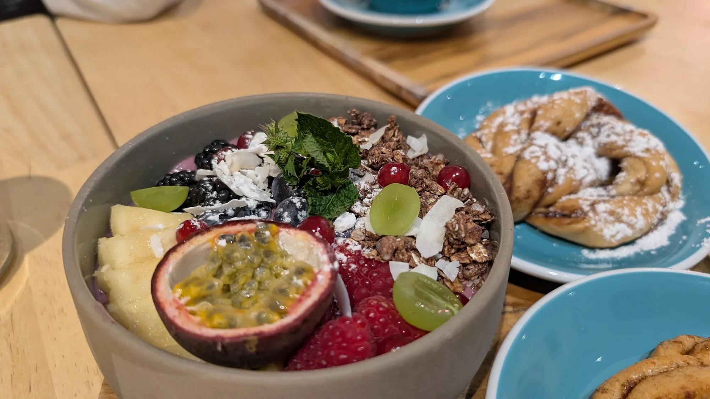
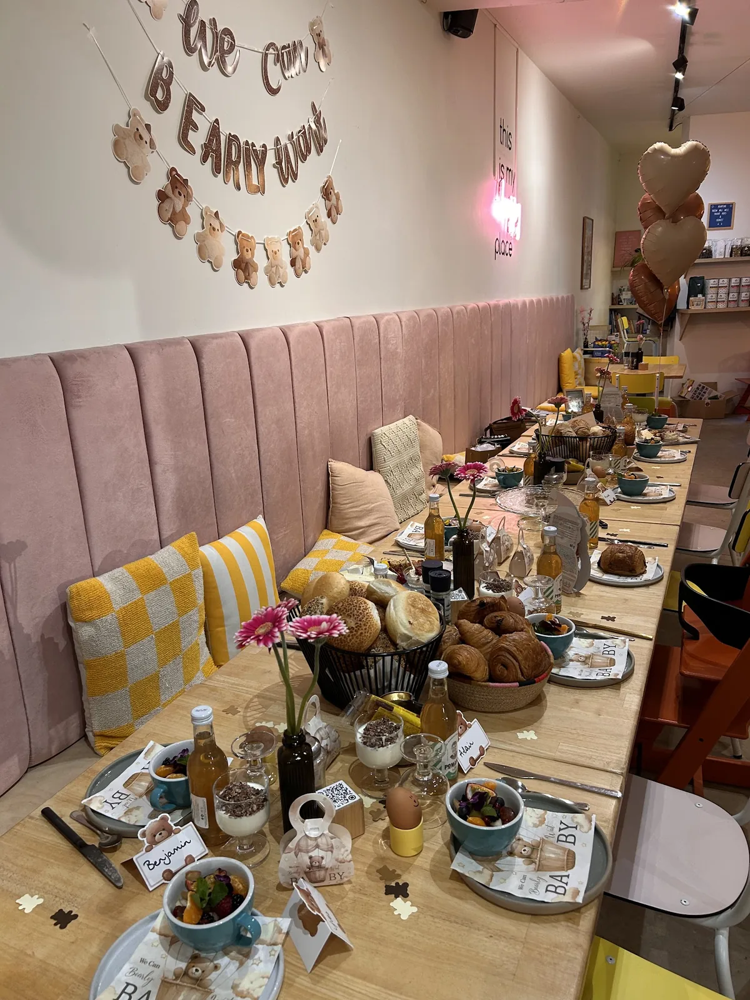
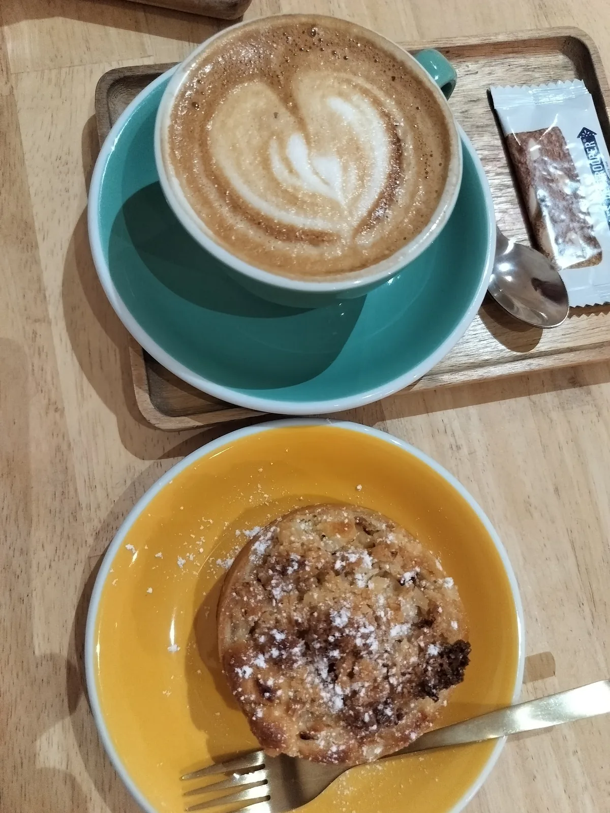
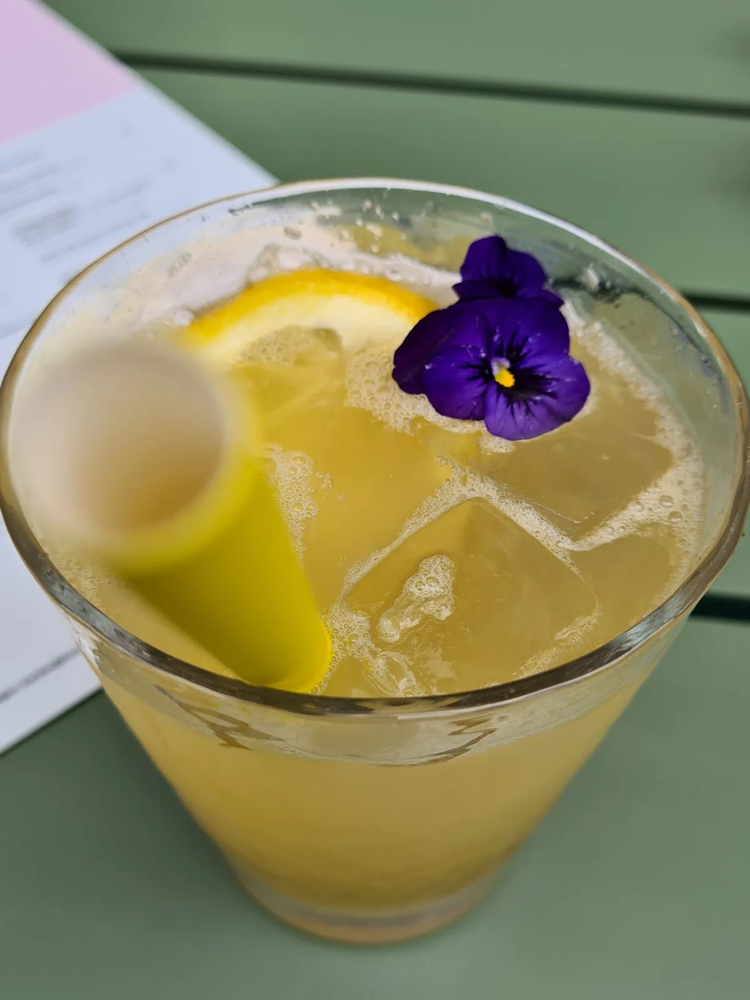
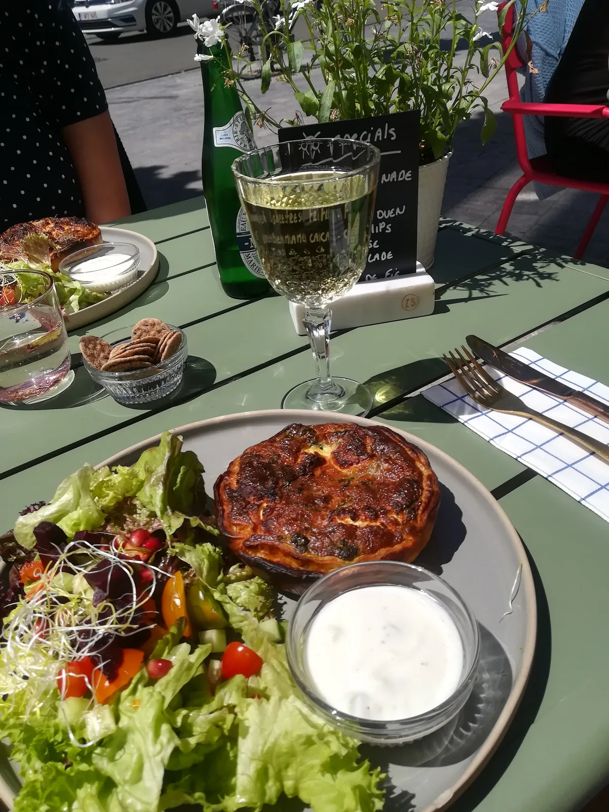
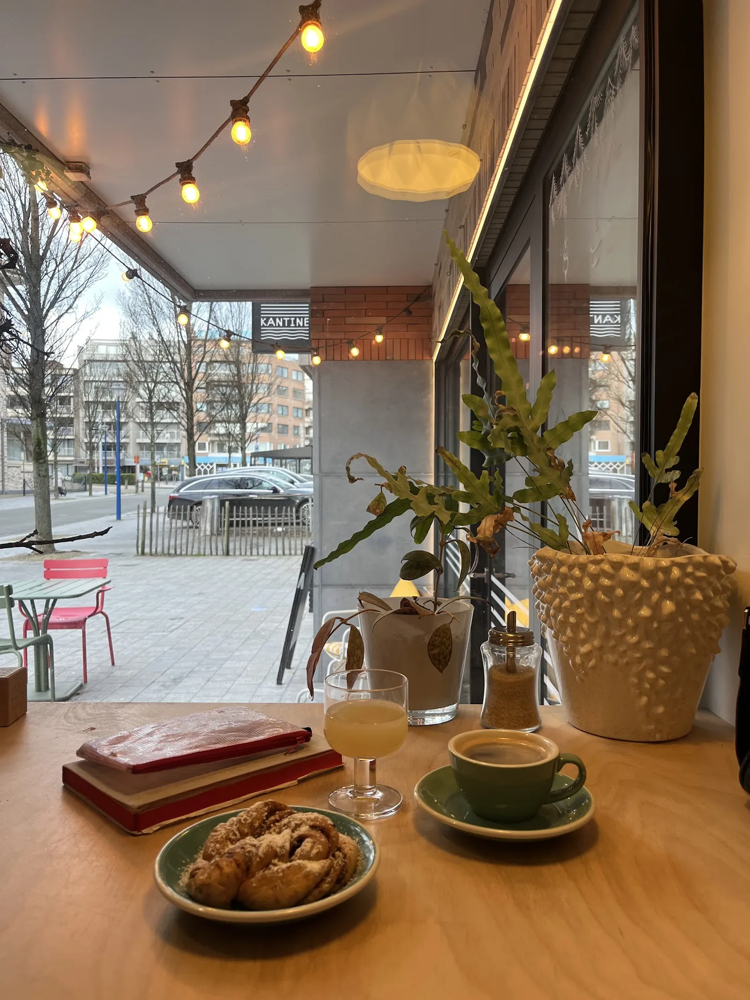
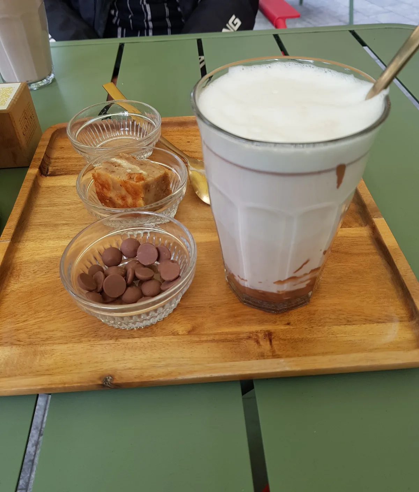
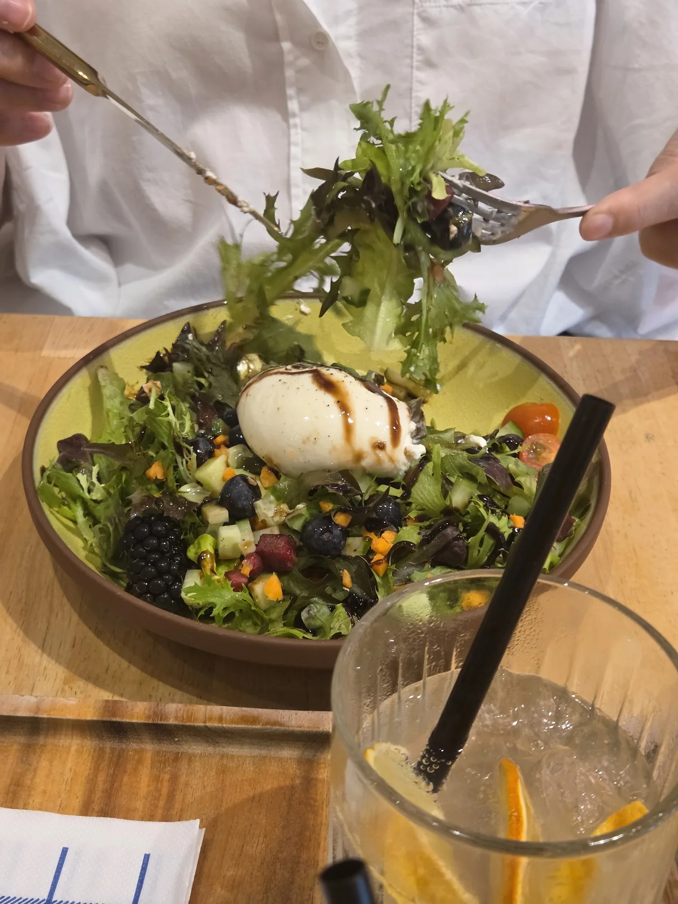

you can't buy happiness,but you can buy coffee.

...and that's pretty close! Bij Anke en Kevin komt je ontbijt vers van bij de bakker, en de taart en limonade uit hun eigen keuken.
Van eerste koffie tot laatste taartje.
Een vroeg ontbijt, een lange brunch of gewoon een stuk taart met je koffie: kom wanneer het jou past.
Kantine
Specialty coffee
Ontbijt & brunch
Lunch
Taart & limonade

Ontbijt & brunch
Brood en koffiekoeken vers van bij de bakker. De tafel mag vol staan.

Koffie & taart
Specialty coffee, en taart uit eigen keuken.

Limonade
Zelf gemaakt, met een viooltje erop.

Lunch
Met lokale producten en veel groen op je bord.

Neem gerust heel de framily mee.
Kantine is geen plek waar je stil moet zitten. In de speelhoek mogen kinderen gewoon zichzelf zijn, terwijl jij je koffie nog warm opdrinkt.
Met vrienden, met de familie of met allebei tegelijk.
Samen iets doen, of iemand blij maken.
Kantine is ook een plek om iets te vieren. Vraag gerust wat er op de planning staat.

Workshops
Samen iets maken aan onze tafels. Ook voor een vrijgezellen of een teambuilding.
Cadeaubox
Voor wie al alles heeft, behalve een goed ontbijt.
Tafel boeken
Zeker zijn van je plekje, zeker in het weekend? Boek je tafel online.

Tot in de Maurice Blieckstraat.
"Fijne plek, superlekkere lunch en vriendelijke, hartelijke bediening."
Open
- Woensdag tot zondag9u tot 17u30
- Maandag en dinsdagdicht
Waar
Maurice Blieckstraat 11
8670 Koksijde
0495 79 72 44